Intro
ClinBase
- UX Researcher
- Product Strategist
- Information Architect
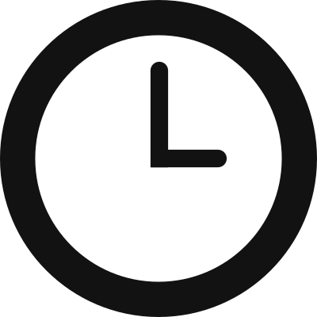
Project duration:August 2025 to November 2025
The Product
For a generation, the promise of technology in medicine was to make doctors and nurses more effective. By 2025, that promise has been broken. Clinicians are now buried under a mountain of clicks, alerts, and after-hours charting, leaving them burned out and disconnected from their patients.
I took on the challenge of designing an Electronic Health Record (EHR) experience that brings the focus back to what matters: the human side of medicine.
The Problem
For more than a decade, the American healthcare system has invested tens of billions of dollars in the arduous task of digitizing patient records and, thus, building an EHR ecosystem. However, the experience from the side of healthcare professionals is not what was expected. Studies show that doctors spend about half of their workday on EHR applications and desktop tasks and less than a third of their time in direct patient interaction. This is compounded by an additional 1-2 hours of work documenting after their shift. There are multiple reports confirming that clinical staff now spend up to two hours on administrative or EHR tasks for every hour of face-to-face patient care.
The Goal
My goal for the project was to restore humanity to the clinical encounter. The premise was simple: to make the encounter between patient and caregiver a conversation by making technology a helper, not the violinist on a two-person date.
Our high-level objectives were:
- To remove the screen as a barrier.
- To create an intuitive system that felt like an assistant, not an obstacle.
Empathize
Understanding the user
Summary
Gaining access to the insights of practicing physicians and nurses in US clinics for this student project was a challenge that I was able to overcome by conducting a solid research process, based on the in-depth analysis of existing industry data.
Initially, I assumed that those who were dissatisfied with the EHRs were the doctors with more years of experience. However, the research showed me that the frustration was universal; even the youngest staff were driven to inefficiency, such as paper-based workarounds due to poorly designed software.
My conclusions were based on a review of industry research from sources such as the KLAS Arch Collaborative and qualitative studies on nursing workflows, which indicate that EHR usability is a primary driver of burnout across all clinician age groups and that paper-based workarounds are a common, rational response to inefficient digital processes. References here↗
Pain points
In my research, I have found three major pain points:
- Inefficient and Redundant Workflows: Nurses are forced into a process of "double-charting"—capturing patient information on paper in the exam room and then manually re-entering it into a desktop computer later.
- High Cognitive Load & Information Overload: Physicians are presented with cluttered, data-dense screens that make it difficult to quickly find the specific information they need during a time-pressed patient visit.
- The Screen as a Barrier to Connection: The clumsy, desktop-based design of current systems forces physicians to turn their backs on their patients to interact with the software.
Based on these three fundamental findings, I developed 4 user personas that allowed me to understand the daily difficulties they faced. The first user person is Maria Sanchez, a busy front-line nurse focused on accuracy and efficiency who needs a faster and more reliable way to chart the patient's vitals in the exam room because to chart twice is a waste of time and it has risk errors. The second user person is Linda Carter, a time-pressed physician who prioritizes patient connection who needs a see a one-glance summary of the patient's problems and medications when I open their chart because searching through all documentation means less time for the patient attention. The third user person is Robert Miller, a senior physician who is easily overwhelmed by complex technology. He needs an easier way to navigate through the EHR of each patient and an easier way to save patient's health data because that consumes an important amount of time from him and any available nurse that helps him. And the fourth is Jessica Willias, a specialized nurse who needs a way to automatically see a graph data of the patience's health over time so that she can instantly identify trends because to waste time searching data and identifying trends may prevent the patient from receiving enough time and education.
Then I proceeded to establish their current user journey map, and with each one I was able to verify the problem of María's double charting, which led her to feel frustrated; or Dr. Carter's constant fatigue, who took her to pajama hours even though the system was supposed to help her perform better in her profession.
Next I present my detailed work on both the user personas created and their respective user journey maps:


User Journey Maria Sanchez
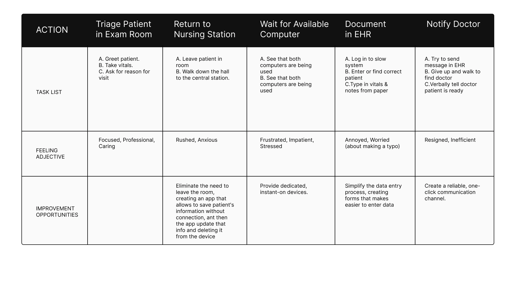
User Journey Linda Carter
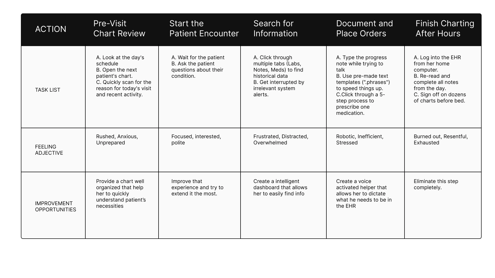
User Journey Robert Miller
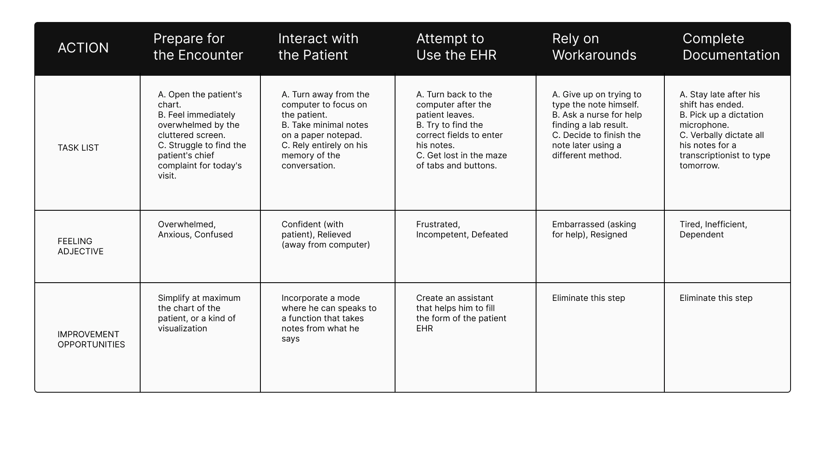
User Journey Jessica Williams
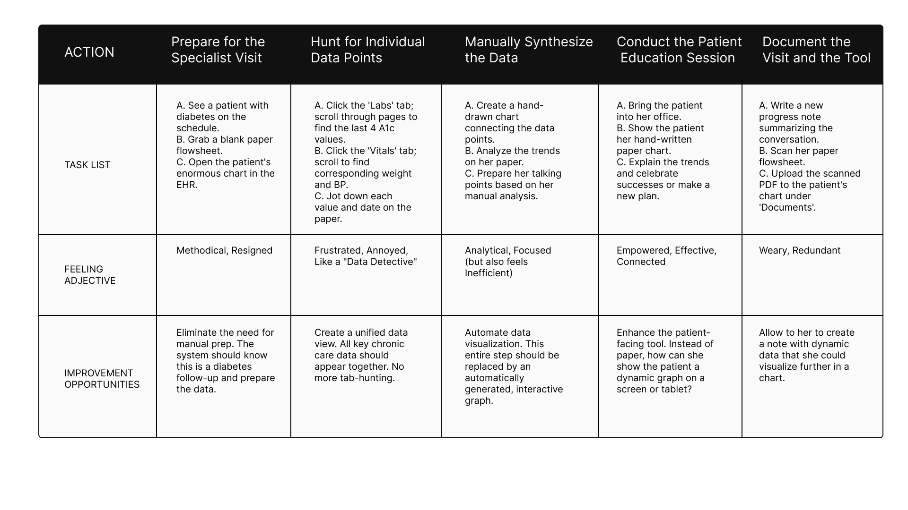
Conclusion
This process allowed me to understand the difficulties that nurses and doctors face. This is how I learned that they need a true system that makes their profession easier, so that they can dedicate all their talent to what is most important: human contact with the patient.
Define
Synthesizing research
This is the chapter where we stop looking at the symptoms and start diagnosing the disease. Following my deep dive into the lives of clinicians, the Define stage became the moment where I crystallized the chaos into a clear mission. I realized that to save the human side of medicine, I had to solve specific, high-stakes problems for the people in the trenches.
The Four Faces of Friction
I framed my strategy around four distinct lives, each representing a different breaking point in the modern healthcare system.
The Battle Against the Clock: Maria Sanchez
For Maria, a front-line nurse, every shift is a race she is designed to lose. She is forced to "double-chart," scribbling vitals on paper in the exam room and then re-entering them into a crowded nursing station computer later. This isn't just a waste of time; it’s a source of stress and dangerous potential errors. My goal for her was clear: if Maria has a mobile-first app to chart vitals directly, she can reclaim her time and care for more patients.
The Struggle for Eye Contact: Dr. Ben Carter
Dr. Carter is a physician who values connection, but his current software acts as a wall between him and his patients. He spends high-pressure appointments digging through cluttered screens, only to finish his work late at night during "pajama time". He needs a "one-glance" summary of problems and medications so the technology can finally step into the background. If the chart is intuitive, Ben can stop staring at the screen and start looking at his patients.
The Search for the Big Picture: Jessica Williams
As a specialist, Jessica acts as a data detective, but the system only gives her fragmented lists instead of a story. She wastes hours manually drawing paper flowsheets to identify health trends before she can even begin educating her patients. She needs automated graphing that turns data into insight instantly. With these visual tools, Jessica can shift her energy from manual data hunting to high-value patient education.
The Burden of Complexity: Dr. Robert Miller
A senior physician, Dr. Miller represents those being left behind by "clever" but cluttered interfaces. The cognitive overload is so great that he has to rely on nurses to help him navigate the EHR, or he avoids the system entirely by using verbal dictation workarounds. By simplifying the navigation and data entry, we can restore his independence and free up the rest of the clinical team to focus on their own tasks.
From these stories, I developed a manifesto for ClinBase:
Intelligent Data Interaction
We will move away from manual effort. Through AI-powered voice recording, the system will transcribe and categorize spoken information directly into patient records. No more hunting for keywords; we are building an AI that understands medical context.
Adaptive Information Display
Information overload ends here. We are moving toward role-specific views where a nurse and a physician see exactly what they need for their specific tasks. By using automated charts and graphs, we will allow clinicians to visualize health trends over time at a glance, making the "big picture" clear and actionable.
A Seamless & Modern Workflow
ClinBase will be a true mobile-first experience, untethering doctors and nurses from their desks and bringing them back to the bedside. This will be supported by a Secure Communication Hub, allowing for instant, HIPAA-compliant collaboration that is directly linked to the patient’s chart.
Ideate
Generating solutions
With the diagnosis complete, the Ideate phase became my laboratory. This was the moment to dream beyond the limitations of current medical software and design a cure for clinician burnout.
The Spark: Dreaming Without Limits
Before drawing a single button, I had to break my own brain. I used "How Might We" questions to challenge the status quo. I asked myself: How might we make seeing a patient’s medications as easy as it is for a four-year-old? and How might we make recording vitals feel as simple as having a conversation?
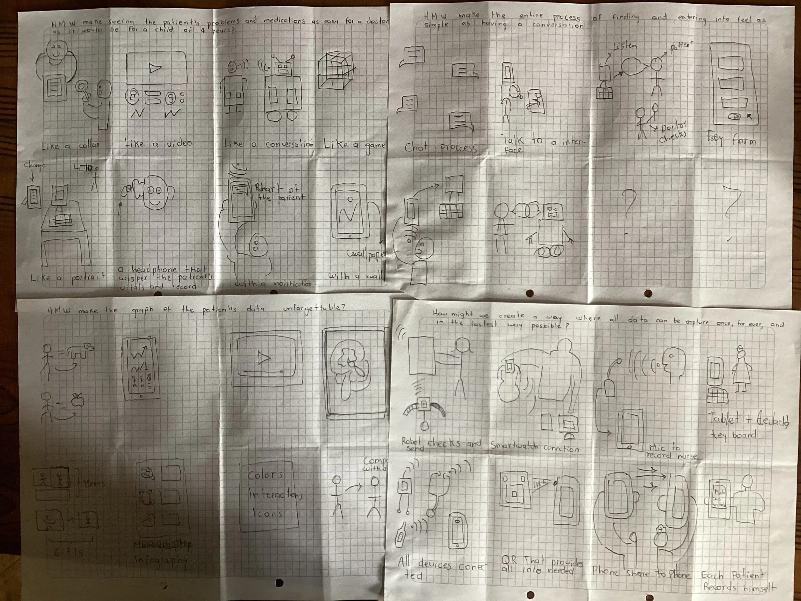
In these sketches, I explored the "unforgettable" graph—a way for Jessica Williams to see a patient’s entire health history not as a list of numbers, but as a visual story that speaks for itself.
The Reconnaissance: Surveying the Titans
To build something relevant, I first had to study the giants already in the arena. My Competitive Audit took me through the worlds of Epic Systems—a powerful but intimidating behemoth—and DrChrono, a mobile pioneer that unfortunately left its desktop users behind.
I discovered a "white space" in the market: no one was delivering a truly seamless experience across all devices. One platform was always a "second-class citizen." This became my mission for ClinBase: a device-agnostic system that treats the phone, the tablet, and the desktop as equals, ensuring Maria never has to wait for a specific computer to do her job.
The Path of Least Resistance: User Flows
Once the vision was clear, I mapped out the User Flows—the exact path a clinician takes from the moment they log in to the moment they finish a note. This was where the "Intelligent Data Interaction" pillar became a reality.
Information Architecture
Finally, I designed the Information Architecture (Sitemap) to act as a map for two different worlds: the task-heavy world of the Nurse and the summary-focused world of the Physician.
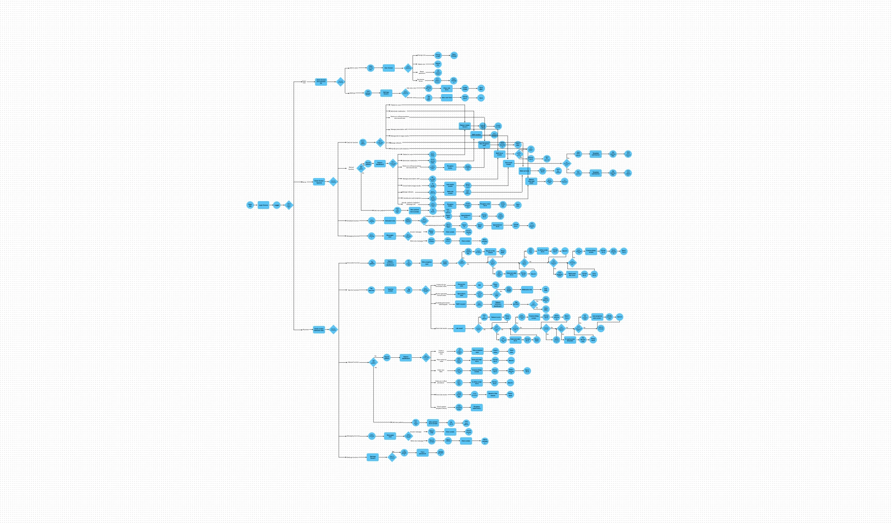
I obsessed over every click. For Dr. Miller, who is often overwhelmed by complexity, I ensured the flow was a straight line, not a maze. For Maria, I mapped a flow that eliminated the need for paper entirely. By the end of this phase, I didn't just have a list of features; I had a blueprint for a system that finally puts the human back at the center of the exam room.
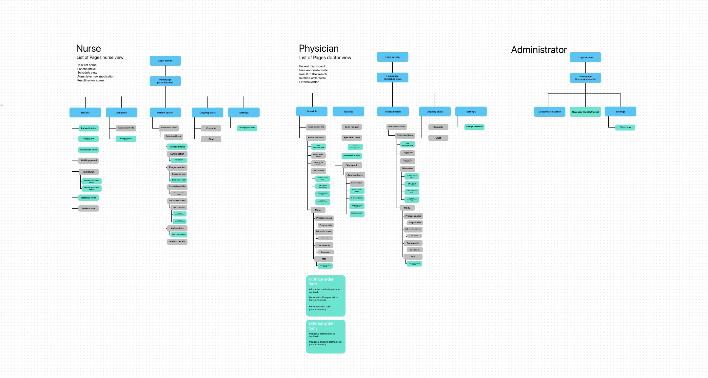
By creating role-specific sitemaps, I ensured that each user type has a tailored experience that meets their unique needs. This was the final piece of the puzzle, setting the stage for the Prototype phase where these ideas would come to life.
Prototype
Blueprints & products
With the digital architecture mapped out, it was time to move from the abstract to the physical. This is the Prototype stage—the "messy middle" of the design process where high-level theories are forced to survive the reality of a pen and a blank sheet of paper.
Translating Logic into Layout
I focused on five critical screens that represented the "make or break" moments for my four personas. Each sketch was a battle against clutter, trying to prove that an EHR could actually be simple.
1. The Task List & Schedule: Organizing Chaos For Maria and Dr. Carter, the day is a mountain of "what's next?" I sketched a Task List View and a Schedule View that functioned less like a static calendar and more like a flight control tower. I focused on making the most urgent information—vitals due, high-risk alerts, and upcoming appointments—impossible to miss.
2. Patient Intake: Ending the Paper Trail To solve Maria’s "double-charting" nightmare, I drafted the Patient Intake screen. I stripped away every unnecessary field, focusing on a flow that feels like a conversation rather than an interrogation. The goal was to see if a nurse could navigate this with one hand while holding a stethoscope with the other.
3. The Patient Dashboard: The One-Glance Story This was the sketch I made for Jessica and Dr. Miller. I experimented with how to show a patient’s entire history on a small screen without it feeling like a wall of gray text. I placed the "Patient Dashboard" at the heart of the experience, prioritizing the "unforgettable" graphs we dreamed about during the Ideate phase.
4. Search Results: The Intelligent Assistant Finally, I tackled the Search Results. If our pillar was "Intelligent Data Interaction," the search bar couldn't just return a list of files. I sketched a results page that highlights context—showing the clinician not just the document they asked for, but the relevant lab results and notes that go with it.
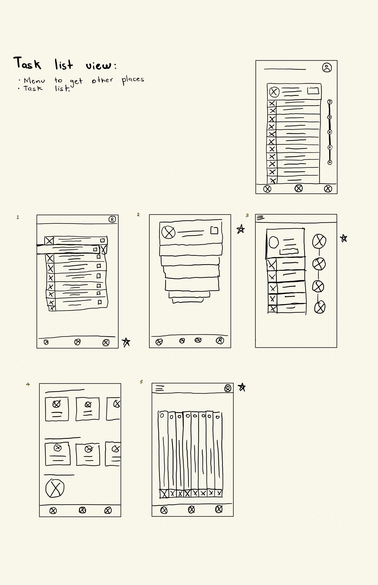
Task list view
With this wireframe, what I was aiming for was to give users a useful and engaging way to find their assigned tasks, while also providing a method for sorting those tasks.
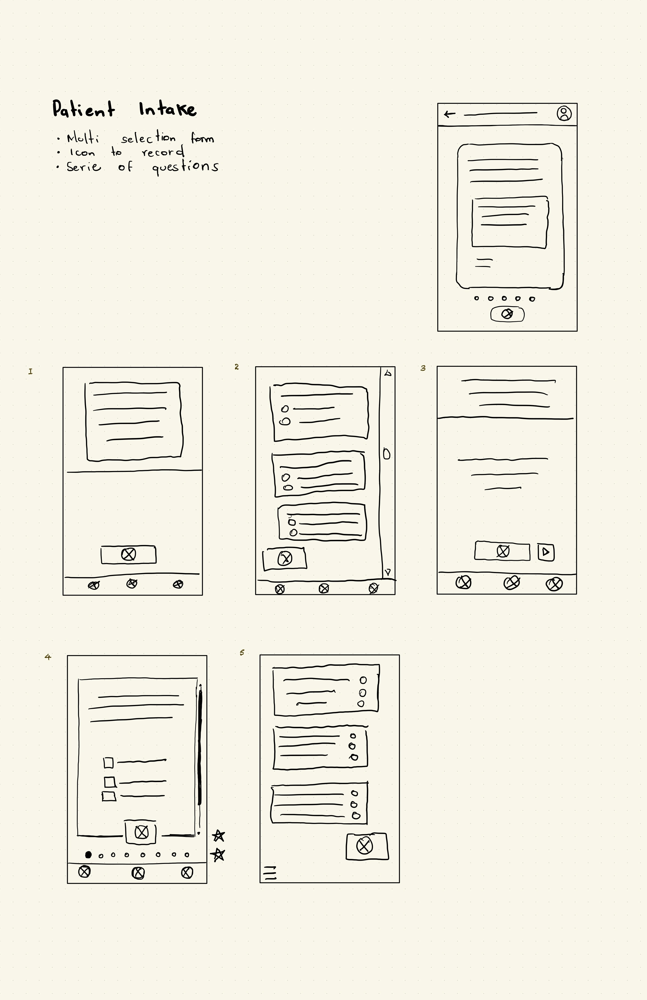
Patient intake form
Since we detected that users like Dr. Carter desire a way to enter patient information without losing contact with them, I asked my self: how might I can make the filling out of an intake as simple as order a pizza? I sought an interface that could record the conversation and have artificial intelligence take that conversation to fill out the form.
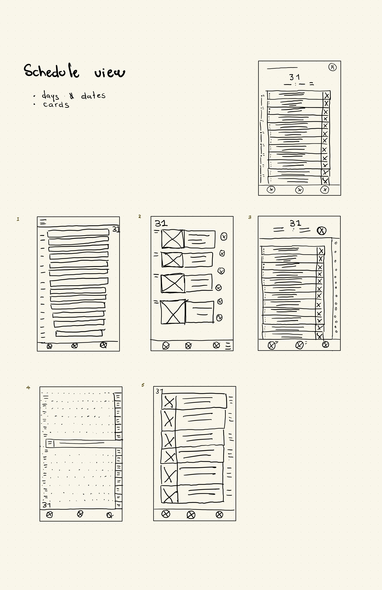
Schedule view
With this screen, we aimed to have a reliable and simple way to present their schedule to all the doctors.
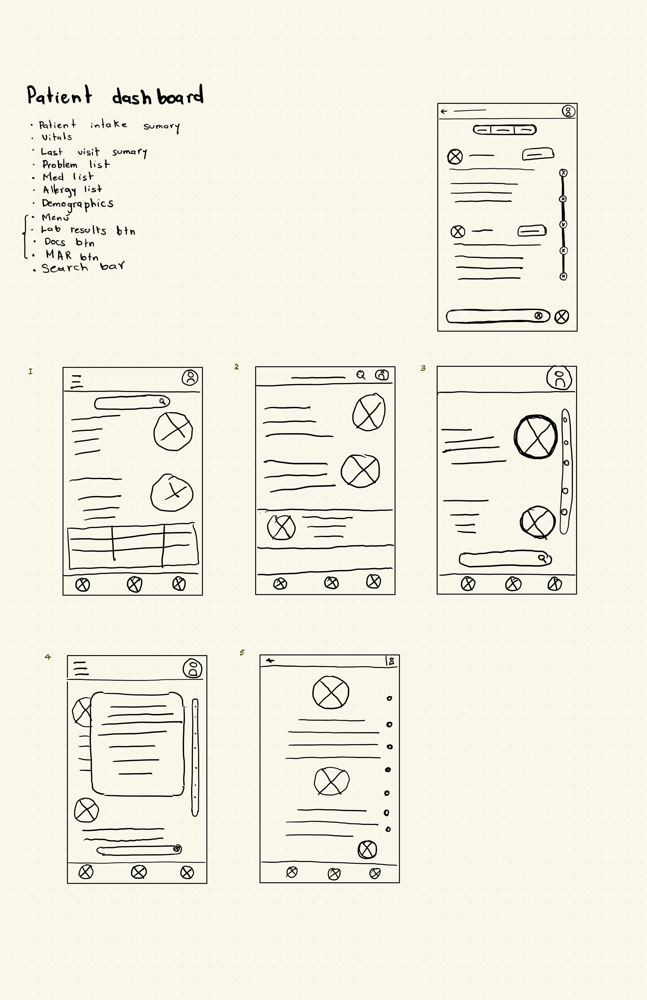
Patient dashboard
This view was very important. Here, we asked ourselves: How might we make the patient's data unforgettable?
Search results
This screen was important because we wanted people who dealt with technology to have an easy and instant way to find the information. That's why we asked ourselves: 'How might we make seeing the patient’s problems and medications easy for a child of 4 years?'
Digital Scaffolding
I transitioned from paper to grayscale wireframes to finalize logic and hierarchy. This responsive framework ensures ClinBase works seamlessly across tablets and desktops.
- Command Centers:Refined the Task List and Schedule for immediate clarity.
- Visual Narrative:Polished the Intake and Dashboard to emphasize AI-driven health trends.
- Contextual Search:Designed a search flow that prioritizes medical relevance.
These blueprints are the final structural layer before adding high-fidelity detail.
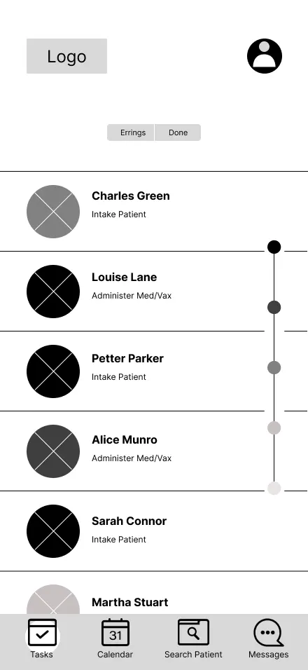
Task list
At this point, what I was aiming for was to make it as simple and intuitive as possible.
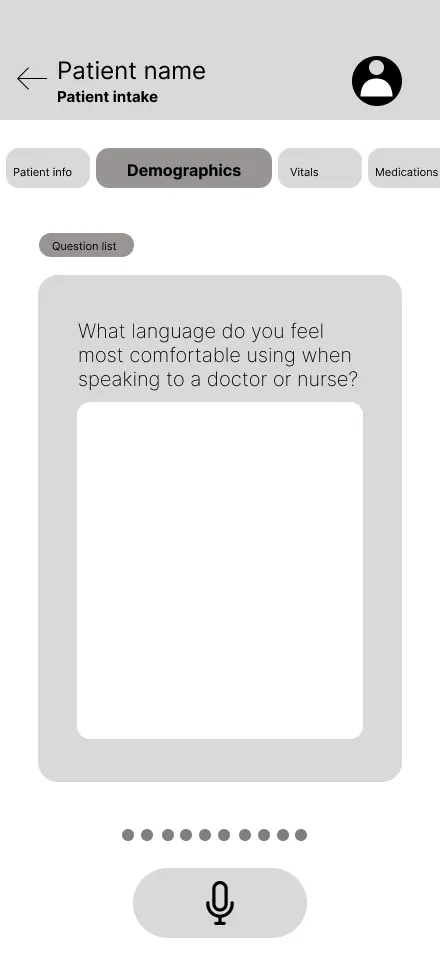
Patient intake
How might I can make the filling out of an intake as simple as order a pizza? Whit that question in my mind I decided to filling out the form as recording a conversation, and an AI can transcribe it.
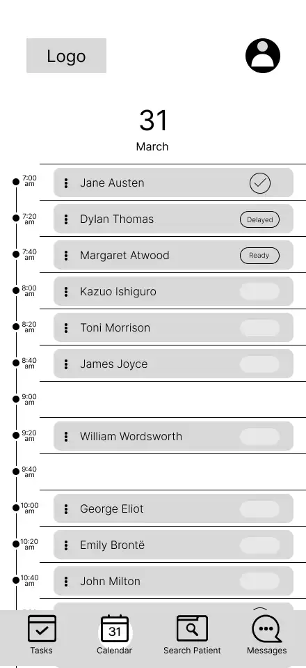
Schedule
At this point, what I was aiming for was to make it as simple and intuitive as possible.
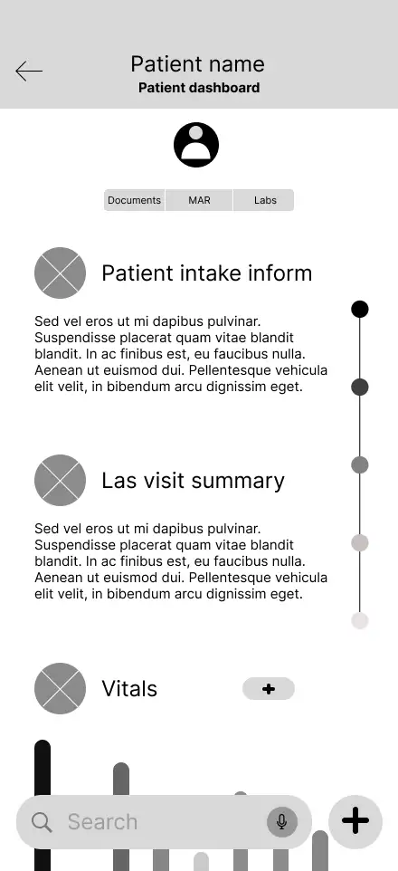
Patient dashboard
How might I make the patient's data unforgettable? That was the question that guided me in the design of this screen.
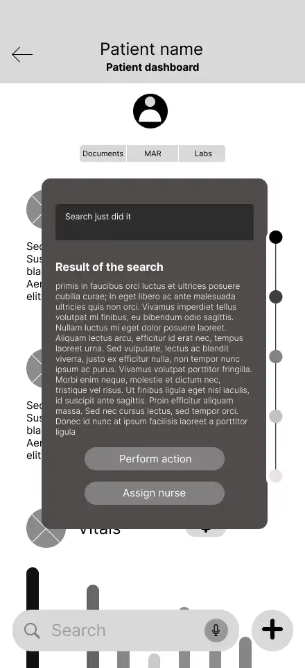
Search results
This screen was created with effectivness in mind, we went to share search results easily and in a understandable way.
Interactive Low-Fidelity Prototype
To test the navigation and logic of the design, I transformed my digital wireframes into a clickable low-fidelity prototype. This interactive version allows for a realistic simulation of the clinician’s workflow, from checking a schedule to updating a patient's chart.
You can interact with the prototype here:Lo-Fi Prototype ↗
Once the prototype was functional, I conducted a usability study to see how real users would interact with the interface. I will share the findings from those sessions in the The Test Stage ↗.
Mockups
This is the stage where the structural logic of the wireframes meets the final visual identity of ClinBase. Moving into high-fidelity mockups meant adding the "skin" to the scaffolding—applying color, typography, and refined UI components to transform grayscale skeletons into a realistic clinical tool.
Every aesthetic choice was guided by the mission to reduce cognitive load. I implemented a clean, high-contrast palette to ensure readability in dimly lit hospital rooms and used a rigorous visual hierarchy to make critical patient alerts impossible to miss.
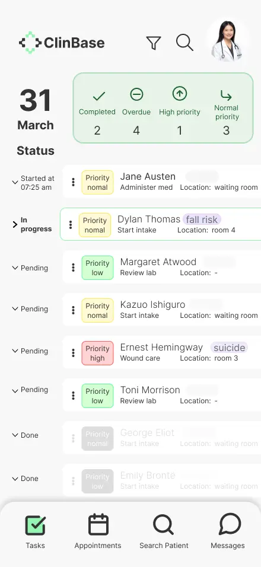
Task list
With this screen, we wanted to give healthcare staff a way to see their workload at a glance, track their progress, and easily identify which activities required immediate attention.
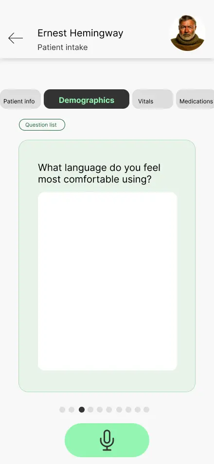
Patient intake
With this screen, we aimed for simplicity and a way to record the patient intake so it could be a direct conversation, without intermediaries.
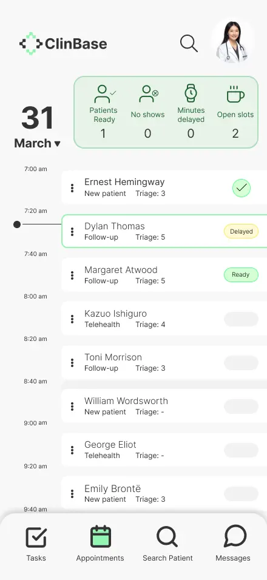
Schedule
With this screen, we were pursuing the same concept as the task list screen: seeing the day’s workload and quickly recognizing pending tasks.
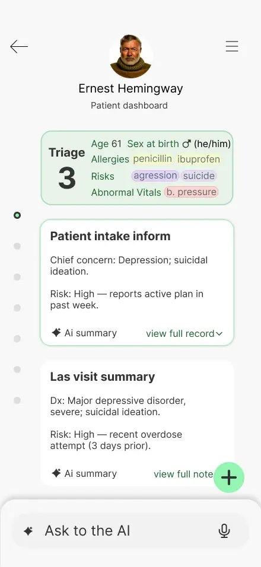
Patient dashboard
This screen was challenging; we aimed to give it visual appeal and strong usability.
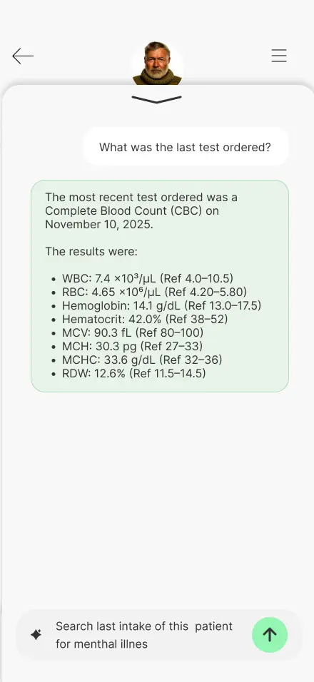
Search results
This feature was one of the most anticipated. By making it simple and functional, we sought to make the work easier.
High-Fidelity Interactive Prototype
This interactive mockup allows you to experience the near-final vision of the application. You can explore the high-fidelity prototype here: Hi-Fi Prototype ↗
With the visual identity of ClinBase fully realized, I transitioned into a second phase of validation. As is expected at this stage of the design process, I conducted additional user research to ensure that the high-fidelity elements—like color-coded alerts and dense data visualizations—remained intuitive and supportive of the clinician's focus under pressure.
The feedback from this round of research was vital in polishing the final product. I will share the specific insights, breakthroughs, and final refinements in The Test Stage ↗.
Test
Validating concepts
The testing stage was a fundamental part of the process to validate the effectiveness of the solution. This stage was carried out in two distinct phases to ensure that both the structural logic and the final visual experience met the users' needs.
- First Phase: This testing was conducted upon completion of the low-fidelity (Lo-Fi) prototype, focusing on the core user flow and information architecture.
- Second Phase: This testing took place once the high-fidelity (Hi-Fi) prototype was finished, focusing on usability, visual hierarchy, and the overall interactive experience.
First Phase
The first testing phase was conducted immediately after completing the initial wireframes. The primary goal was to determine if the proposed app could effectively streamline the patient intake and encounter processes for nurses and physicians.
Note on Methodology: While the formal research plan was designed for professional study purposes, the reality of recruiting medical professionals within the project timeframe proved challenging. Consequently, a "mix" of testing was employed to reach the target of five participants. This included conducting sessions with English-speaking individuals and utilizing AI tools to simulate user interactions, ensuring enough data was collected to validate the low-fidelity prototype.
Study Details
- Research Questions: The study focused on identifying the biggest frustrations physicians experience during encounters and determining which parts of the user flow were most helpful.
- Methodology: A remote, unmoderated usability study where users were asked to perform specific tasks using a Figma prototype.
- Participants: Five participants, ranging from 30 to 60 years old.
- Key Tasks: Users were asked to navigate from the home screen to the calendar, open a patient’s dashboard, and create a new encounter note.
Key Findings & Themes
The testing sessions revealed critical areas for improvement regarding navigation, efficiency, and accessibility:
- Navigation Accessibility: Three out of five participants noted issues with navigation, specifically highlighting that icons were too small and touch targets were not large enough for comfortable use.
- Workflow Efficiency: Participants struggled with certain transitions; for example, one user found it complicated to find the "new encounter note" option and suggested adding clearer titles to the search functionality. Others requested shortcuts for recurring notes to save time.
- Assistive Technology Gaps: Testing identified that certain screens lacked screen reader compatibility and descriptions, posing a significant barrier for users who rely on accessibility tools.
Based on these insights, the transition to the High-Fidelity stage focused on the following:
- Increasing icon sizes and expanding touch areas to improve navigation for users with varying levels of dexterity.
- Prioritizing screen reader compatibility to ensure the platform is inclusive.
Second Phase
Following the adjustments made after the low-fidelity study, the second phase focused on testing the high-fidelity prototype. This version included the full visual identity, high-resolution UI components, and the integration of voice command simulations to reflect the final intended product.
Real-World Validation: Unlike the first phase, where AI was used to supplement data, this stage was validated entirely by real users. Most notably, I was able to get in touch with a practicing nurse in the United States, alongside two other real users. This allowed for a much deeper professional critique of the application's specialized workflows.
Methodology Update
This phase followed the same structural research plan established at the beginning of the project. By using the same tasks and KPIs (Time on Task and System Usability Scale), I could directly compare how the visual polish and structural changes impacted the user experience compared to the Lo-Fi version.
The following image illustrates the improvements made to the final design based on user feedback. The primary updates focused on the task screen, where initial testing revealed that the search and filter tools were difficult to access. To address this, I improved the discoverability of these features to help users find specific tasks more easily. Additionally, further refinements were made to the overall interactive flow of the prototype.
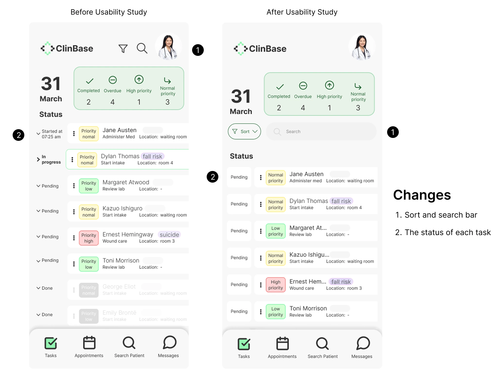
Takeaways and Learning
The high-fidelity prototype of this application received highly positive feedback from real users. Some of their comments included: 'This would save me so much time' and 'Excellent app, very useful.' While real-world data was not included as this is a student project, it fully reflects the entire design process.
Through this project, I learned the vital importance of accessibility in applications and how it benefits not only people with disabilities but all daily users. Because of this, I prioritized accessibility in everything from color selection to core functionality. Another key takeaway was finding the balance between functionality and cognitive load to ensure the system is useful without being overly complex. This led me to make certain design decisions that, while initially less appealing to me aesthetically, significantly improved the overall user experience.